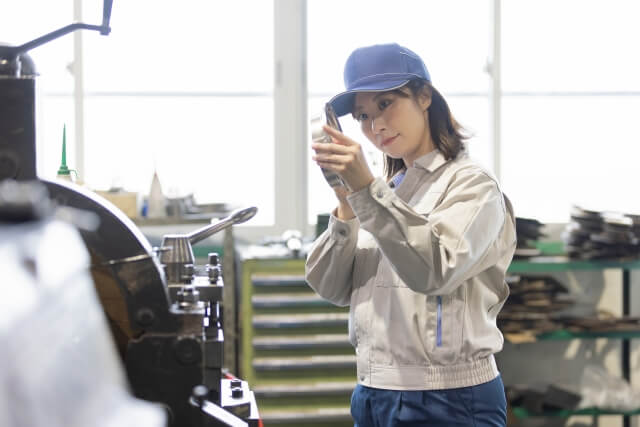
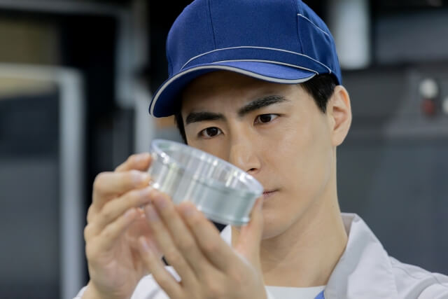
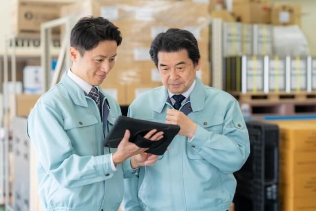
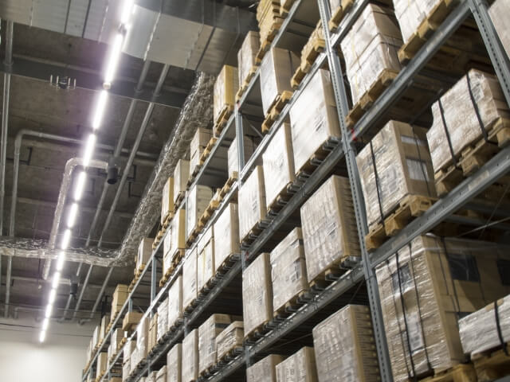
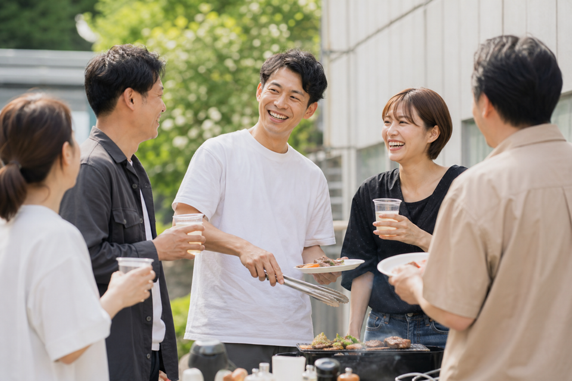
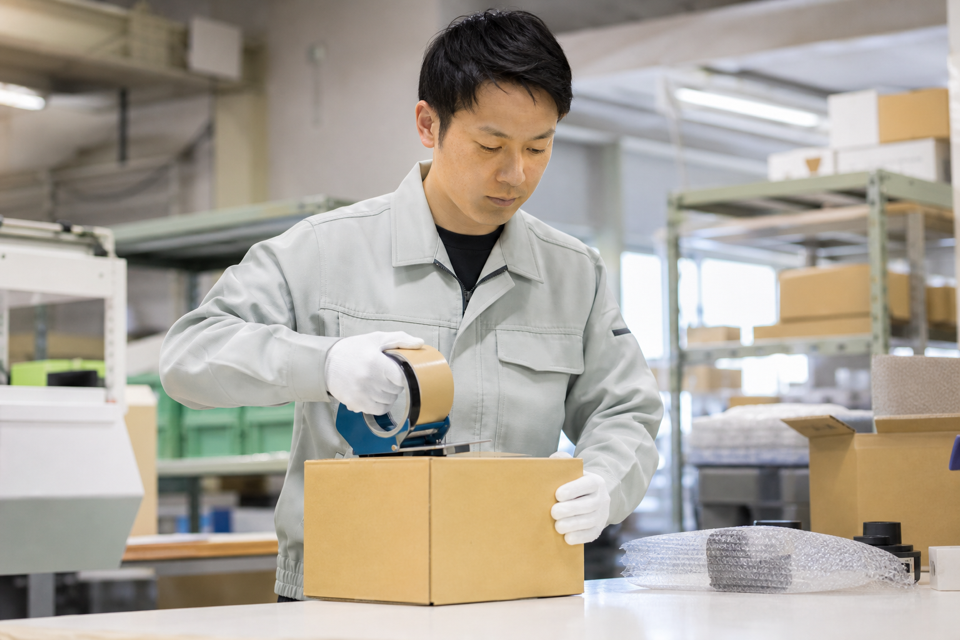
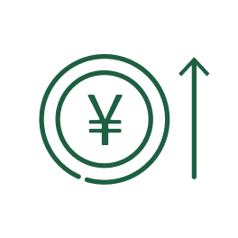
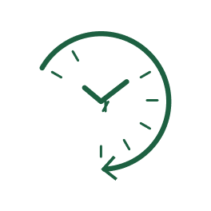
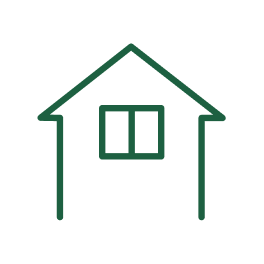

CHECK
検品
傷や不備がないか、一つひとつ丁寧に確認します。

MESSAGE
このたび、代表取締役に就任いたしました庄村一哉です。
当社は40年以上にわたり、東証一部上場企業の一次下請業者として、検品・加工・荷造り梱包業務を担い、製品がお客様のもとへ届くまでの品質を支えてまいりました。
私たちの仕事は決して目立つものではありません。しかし、一つひとつの確認や丁寧な作業が、お客様の安心や快適な暮らしにつながっています。
私が何より大切にしたいのは「人」です。40年以上会社を支えてくださっている社員をはじめ、多くの仲間の努力があったからこそ、今日の庄村商会があります。社員とそのご家族が安心して働き、生活できる会社であること。それが、良い仕事を生み、お客様からの信頼につながると考えています。
当社の経営理念は「世のため、人のため。」です。毎日の仕事は誰かの暮らしにつながっています。一人ひとりが昨日より一歩成長し、その積み重ねが会社を成長させ、やがて社会をより良くしていく。そのような会社を目指しています。
これまで築いてきた信頼と品質へのこだわりは大切に受け継ぎながら、時代に合わせて変えるべきことには積極的に挑戦してまいります。
品質を守り、人を育て、信頼を未来へつないでいく。これからも、お客様と社会に必要とされる会社を目指し、歩み続けてまいります。
今後とも、変わらぬご支援、ご愛顧を賜りますようお願い申し上げます。
有限会社庄村商会
代表取締役 庄村 一哉
製品を全国へ安全に届けるため、正確・丁寧に最終点検と荷造り梱包を行います。

傷や不備がないか、一つひとつ丁寧に確認します。

定められた手順に沿い、製品を正しい状態へ仕上げます。

輸送中の外的要因から製品を守り、良い状態で届けます。
IMPORTANCE
梱包業は、製品を輸送中のあらゆる外的要因から保護し、安全かつ効率的な輸送を実現する要となる作業です。適切な荷造りは、製品の破損や劣化を防ぎ、品質を維持することで、顧客満足度向上と返品・交換コストの削減に貢献します。注目を浴びることはあまり多くはありませんが、安全でスムーズな物流、そして上場企業の品質を支える重要な役割を果たしています。

仕事では、お互いに声をかけ合い、助け合いながら、一つの工程を仕上げています。でも、庄村商会の仲間とのつながりは、それだけではありません。
休日にBBQをしたり、釣りに出かけたり、パチンコに行ったり（笑）。何気ない時間を一緒に過ごすこともあります。もちろん、参加は自由です。そんな仲間がいることは、庄村商会の大きな魅力の一つです。

一つひとつの作業は地道ですが、その積み重ねがお客様の安心につながっていると思うと、自然と責任感も生まれます。
出来なかったことが出来るようになると嬉しいです。毎日、誇りを持って仕事をしています。
私たちが携わる製品は、全国のお客様のもとへ届けられます。最後の品質を守る仕事として、責任とやりがいを感じられます。
経験や資格は必要ありません。先輩が丁寧に教え、一歩ずつ成長できる環境があります。
昨日できなかったことが、今日できるようになる。一歩ずつ成長し、その積み重ねを大切にしています。
創業40年以上。40年以上勤務している社員も在籍しています。安定した仕事と働きやすい環境があります。
助け合い、声を掛け合い、笑い合える。仕事だけでなく、人とのつながりも魅力です。
当社では、経験や資格よりも、人柄や仕事に向き合う姿勢を大切にしています。特別な能力は必要ありません。一歩ずつ成長したいという気持ちがあれば、私たちは全力でサポートします。

一つひとつの作業を丁寧に積み重ねることが、品質を守り、お客様の安心につながります。

仕事は一人ではできません。助け合い、声をかけ合い、仲間と一緒に成長できる人を歓迎します。
最初からできる人はいません。分からないことを聞き、少しずつ覚えていく姿勢を大切にしています。

毎日一歩ずつ成長することが、自分と会社の成長となり、社会をより良くする力になると考えています。
勤務地
知多市北浜町